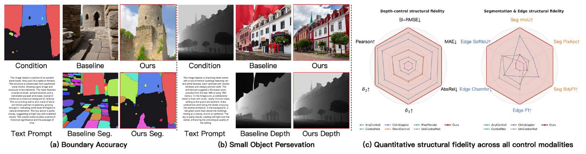
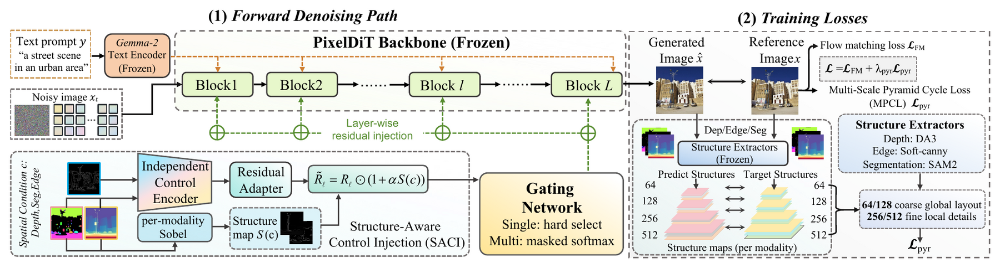
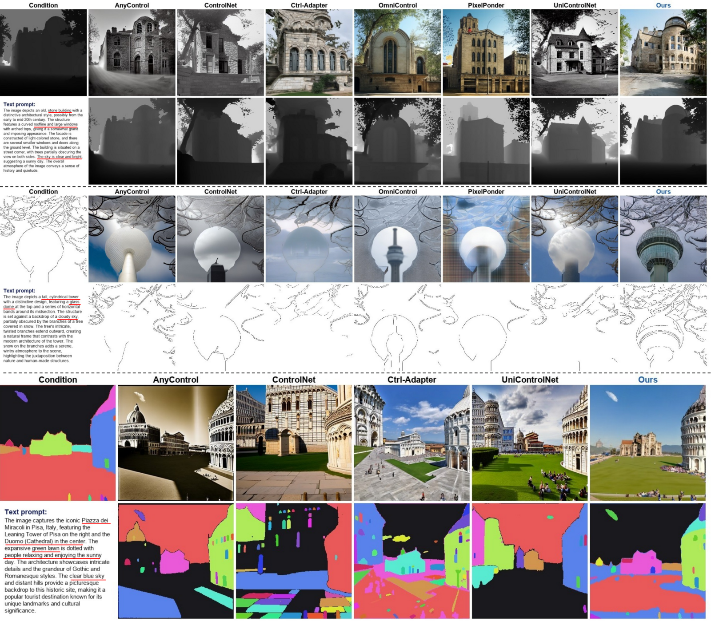
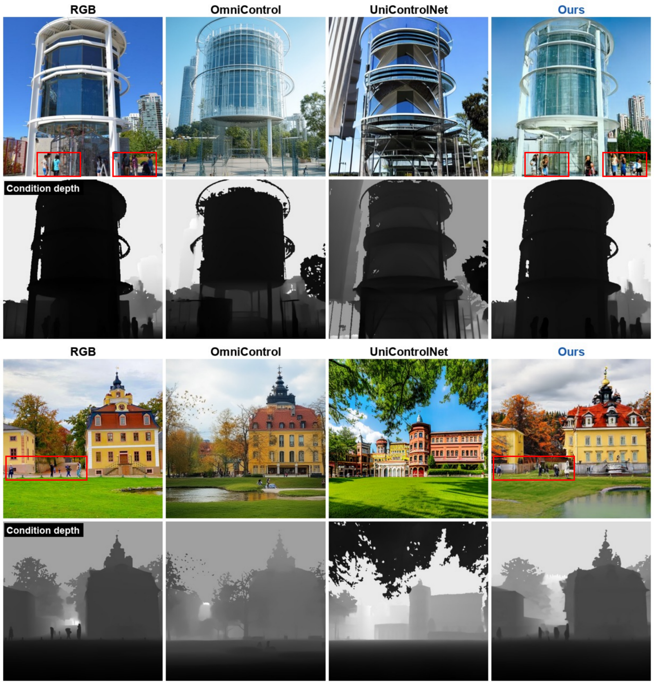
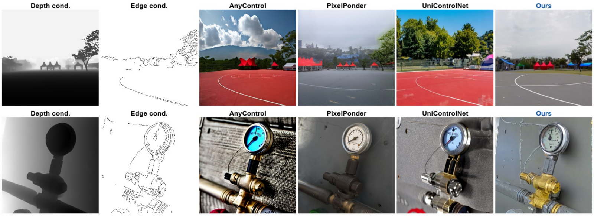
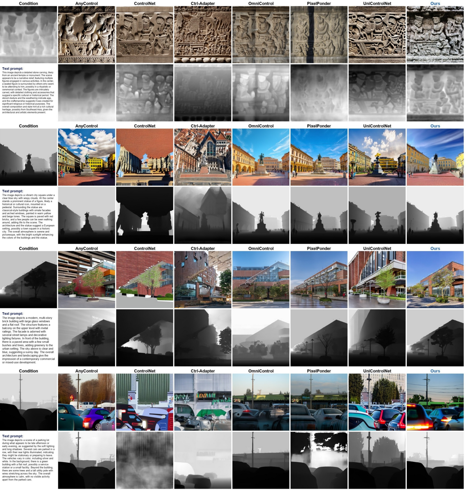
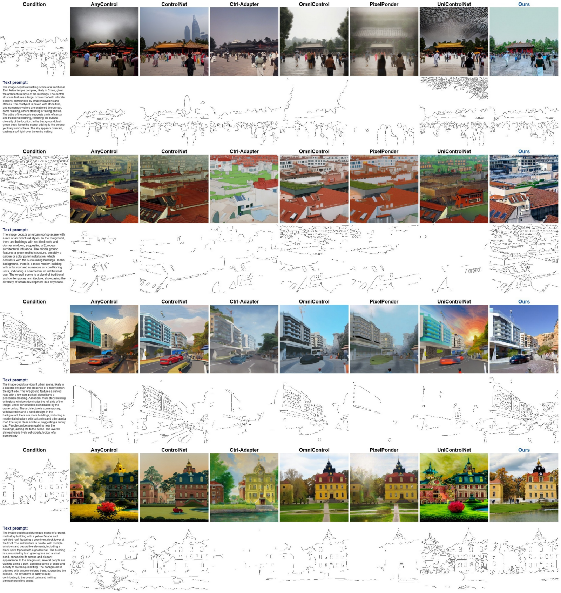

Abstract
Controllable text-to-image diffusion models can often follow the global layout of spatial conditions, yet still violate fine-grained structures such as object boundaries, thin contours, and medium/small conditioned regions. This limitation is especially problematic for VAE-based latent diffusion, where spatial compression can weaken high-frequency and low-area condition signals. We propose PixelControl, a pixel-space controllable diffusion framework for fine-grained condition fidelity. Built on a PixelDiT-style backbone, PixelControl avoids the latent bottleneck and introduces two complementary designs. First, Structure-Aware Control Injection derives a condition structure map and uses it to strengthen injected control residuals around spatially sensitive regions. Second, Multi-Scale Pyramid Cycle Loss verifies generated images against condition-derived structures across multiple resolutions, balancing global layout consistency with local boundary and detail accuracy. PixelControl supports depth, segmentation, edge, and their combinations through modality-specific control branches with lightweight gated fusion. Experiments across depth, segmentation, and edge control show that PixelControl improves structural fidelity and visual quality over existing controllable generation methods, with especially strong gains on boundaries and medium/small conditioned regions.
Method

Pixel-space backbone
Denoising happens directly in pixel space on a PixelDiT-T2I generator, avoiding the VAE latent bottleneck that attenuates sharp boundaries and low-area structures.
Structure-Aware Control Injection (SACI)
A Sobel structure map derived from the condition modulates the injected residual, strengthening control around boundaries and local discontinuities without changing the pretrained backbone.
Multi-Scale Pyramid Cycle Loss (MPCL)
Generated images are re-verified against condition-derived structures at 512/256/128/64, with coarse scales enforcing layout and fine scales enforcing boundary and detail accuracy.
Gated multi-condition control
Independent depth, segmentation, and edge branches are fused by a lightweight layer-wise gate, preserving single-condition behavior while enabling compositional control.
Results
PixelControl consistently improves structural fidelity across depth, segmentation, and edge control, with the largest gains on boundaries and non-large conditioned regions — while also achieving the best image quality (FID).
| Setting | Metric | Best baseline | PixelControl |
|---|---|---|---|
| Depth | AbsRel ↓ | 0.1949 | 0.1434 |
| Segmentation | Boundary-F1 ↑ | 0.5061 | 0.6973 |
| Edge | Chamfer ↓ | 11.53 | 5.456 |
| Non-large depth | AbsRel ↓ | 0.2727 | 0.1419 |
| Non-large edge | Chamfer ↓ | 4.381 | 2.603 |
| Non-large seg. | Boundary-F1 ↑ | 0.4728 | 0.6409 |



Supplementary



BibTeX
@article{lin2025pixelcontrol,
title = {PixelControl: Fine-Grained Condition Fidelity in Text-to-Image Diffusion},
author = {Lin, Xin and Li, Haodong and Zhang, Zhifei and Yang, Yutong and
Zheng, Haitian and Tian, Juanxi and Lin, Zhe and Nguyen, Truong},
journal = {arXiv preprint},
year = {2025}
}